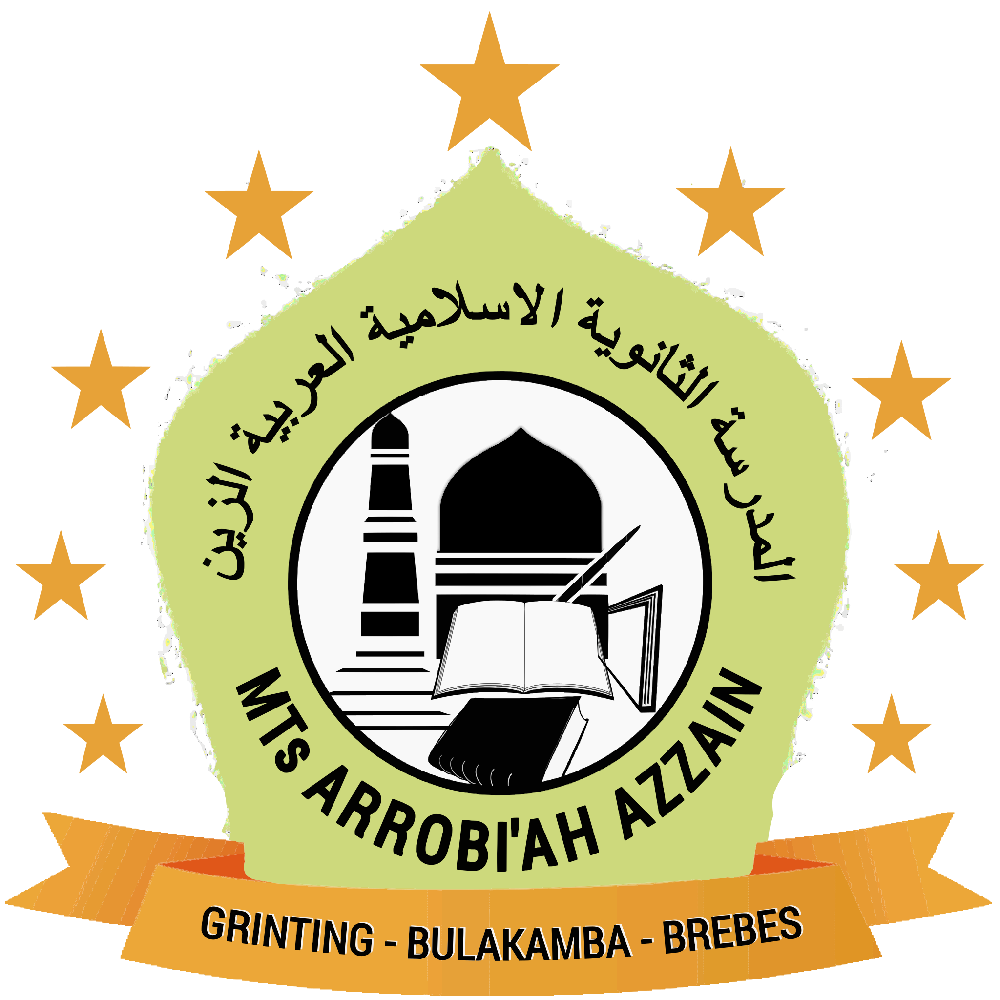

MTs ARROBIYAH AZZAIN
Surat Keterangan Kelulusan Tahun Ajaran 2025/2026
SURAT KETERANGAN KELULUSAN
Nomor: {{Nomor SKTL}}
Dengan ini menerangkan bahwa siswa {{Nama}} dengan NISN {{NISN}} dinyatakan {{Status Kelulusan}}.
{{QR_CODE}}
{{Tanggal}}
Kepala Sekolah
LULUS
Kepala MTs Arrobiyah Azzain